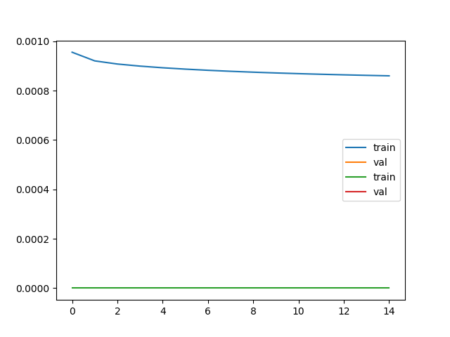
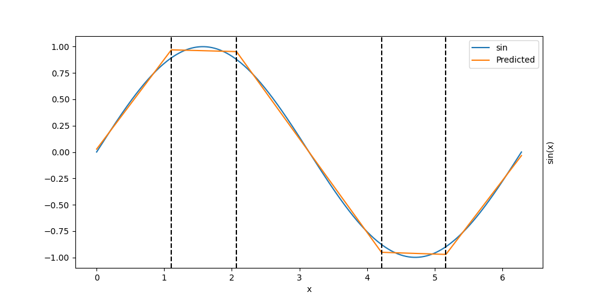

Note
Go to the end to download the full example code.
MLP Example with Growing Layers#
This example shows how to train a MLP with growing layers on sin data.
# Authors: Theo Rudkiewicz <theo.rudkiewicz@inria.fr>
# Sylvain Chevallier <sylvain.chevallier@universite-paris-saclay.fr>
Setup#
Importing the modules and verifying gpu availability.
import matplotlib.pyplot as plt
import numpy as np
import torch
import torch.nn as nn
from helpers.auxilliary_functions import *
from gromo.growing_block import GrowingBlock, LinearGrowingBlock, LinearGrowingModule
from gromo.growing_mlp import GrowingMLP
DEVICE = torch.device("cuda" if torch.cuda.is_available() else "cpu")
DEVICE
device(type='cpu')
Auxiliary functions#
We define some auxiliary functions to train the model, and plot the results.
class IdDataloader:
def __init__(
self, nb_sample: int = 1, batch_size: int = 100, seed: int = 0, device=DEVICE
):
self.nb_sample = nb_sample
self.batch_size = batch_size
self.seed = seed
self.sample_index = 0
self.device = device
def __iter__(self):
torch.manual_seed(self.seed)
self.sample_index = 0
return self
def __next__(self):
if self.sample_index >= self.nb_sample:
raise StopIteration
self.sample_index += 1
x = torch.rand(self.batch_size, 2, device=self.device)
return x, x
def plt_model(model, fig):
x = torch.linspace(0, 2 * np.pi, 1000, device=DEVICE).view(-1, 1)
y = torch.sin(x)
y_pred = model(x)
fig.plot(x.cpu().numpy(), y.cpu().numpy(), label="sin")
fig.plot(x.cpu().numpy(), y_pred.cpu().detach().numpy(), label="Predicted")
for i in range(model[0].bias.data.shape[0]):
split = -model[0].bias.data[i] / model[0].weight.data[i, 0]
if 0 <= split <= 2 * np.pi:
fig.axvline(split.item(), color="black", linestyle="--")
fig.legend()
fig.set_xlabel("x")
fig.yaxis.set_label_position("right")
fig.set_ylabel("sin(x)")
def plt_model_id(model, fig):
x = torch.linspace(0, 1, 1000, device=DEVICE).view(-1, 1)
# y = torch.selu(x)
y = x
y_pred = model(torch.cat([x, x], dim=1))
fig.plot(x.cpu().numpy(), y.cpu().numpy(), label="selu")
fig.plot(x.cpu().numpy(), y_pred[:, 0].cpu().detach().numpy(), label="Predicted 1")
fig.plot(x.cpu().numpy(), y_pred[:, 1].cpu().detach().numpy(), label="Predicted 2")
fig.legend()
fig.set_xlabel("x")
fig.yaxis.set_label_position("right")
fig.set_ylabel("selu(x)")
Handcrafted sin model#
We define a simple MLP model to approximate the sin function.
n_neurons = 5
torch.manual_seed(0)
l1 = nn.Linear(1, n_neurons, device=DEVICE)
l2 = nn.Linear(n_neurons, 1, device=DEVICE)
net = nn.Sequential(l1, nn.ReLU(), l2)
batch_size = 1_000
nb_sample = 1_000
l1.weight.data = torch.ones_like(l1.weight.data)
a = 1.1
b = 0.87
l1.bias.data = -torch.tensor([0, a, np.pi - a, np.pi + a, 2 * np.pi - a], device=DEVICE)
l2.weight.data = torch.tensor([[b, -b, -b, b, b]], device=DEVICE)
l2.bias.data = torch.tensor([0.0], device=DEVICE)
l2_err = evaluate_model(
net, SinDataloader(nb_sample=nb_sample, batch_size=batch_size), AxisMSELoss()
)[0]
print(f"Initial error: {l2_err:.2e}")
fig, ax = plt.subplots(1, 1, figsize=(10, 5))
plt_model(net, ax)
Initial error: 1.07e-03
Train the network
optimizer = torch.optim.SGD(net.parameters(), lr=1e-3)
# optimizer = torch.optim.Adam(net.parameters(), lr=1e-3)
res = train(
net,
train_dataloader=SinDataloader(nb_sample=nb_sample, batch_size=batch_size),
optimizer=optimizer,
nb_epoch=15,
show=True,
)
loss_train, accuracy_train, loss_val, accuracy_val = res
plt.plot(loss_train, label="train")
plt.plot(loss_val, label="val")
plt.legend()
plt.show()
plt.plot(accuracy_train, label="train")
plt.plot(accuracy_val, label="val")
plt.legend()
plt.show()
l2_err = evaluate_model(
net, SinDataloader(nb_sample=nb_sample, batch_size=batch_size), AxisMSELoss()
)[0]
print(f"Initial error: {l2_err:.2e}")
fig, ax = plt.subplots(1, 1, figsize=(10, 5))
plt_model(net, ax)
- 
- 
0%| | 0/15 [00:00<?, ?it/s]Epoch 0: Train: loss=9.557e-04, accuracy=0.00
7%|▋ | 1/15 [00:01<00:16, 1.19s/it]Epoch 1: Train: loss=9.207e-04, accuracy=0.00
13%|█▎ | 2/15 [00:02<00:15, 1.18s/it]Epoch 2: Train: loss=9.079e-04, accuracy=0.00
20%|██ | 3/15 [00:03<00:14, 1.18s/it]Epoch 3: Train: loss=8.995e-04, accuracy=0.00
27%|██▋ | 4/15 [00:04<00:13, 1.18s/it]Epoch 4: Train: loss=8.928e-04, accuracy=0.00
33%|███▎ | 5/15 [00:05<00:11, 1.18s/it]Epoch 5: Train: loss=8.872e-04, accuracy=0.00
40%|████ | 6/15 [00:07<00:10, 1.18s/it]Epoch 6: Train: loss=8.825e-04, accuracy=0.00
47%|████▋ | 7/15 [00:08<00:09, 1.18s/it]Epoch 7: Train: loss=8.785e-04, accuracy=0.00
53%|█████▎ | 8/15 [00:09<00:08, 1.18s/it]Epoch 8: Train: loss=8.749e-04, accuracy=0.00
60%|██████ | 9/15 [00:10<00:07, 1.18s/it]Epoch 9: Train: loss=8.718e-04, accuracy=0.00
67%|██████▋ | 10/15 [00:11<00:05, 1.18s/it]Epoch 10: Train: loss=8.689e-04, accuracy=0.00
73%|███████▎ | 11/15 [00:13<00:04, 1.19s/it]Epoch 11: Train: loss=8.664e-04, accuracy=0.00
80%|████████ | 12/15 [00:14<00:03, 1.20s/it]Epoch 12: Train: loss=8.641e-04, accuracy=0.00
87%|████████▋ | 13/15 [00:15<00:02, 1.20s/it]Epoch 13: Train: loss=8.620e-04, accuracy=0.00
93%|█████████▎| 14/15 [00:16<00:01, 1.20s/it]Epoch 14: Train: loss=8.601e-04, accuracy=0.00
100%|██████████| 15/15 [00:17<00:00, 1.20s/it]
100%|██████████| 15/15 [00:17<00:00, 1.19s/it]
Initial error: 8.59e-04
Growing MLP#
We define a growing MLP model to approximate the sin function. Define some auxiliary functions to train the model, and plot the results.
def plot():
fig, ax = plt.subplots(1, 1, figsize=(10, 5))
plt_model(model, ax)
loss_func_sum = AxisMSELoss(reduction="sum")
loss_func_mean = AxisMSELoss(reduction="mean")
def step(show=True, selected_layer=None, gamma_sample: int = 100):
train_dataloader = SinDataloader(nb_sample=nb_sample, batch_size=batch_size)
initial_loss, _ = compute_statistics(
growing_model=model, loss_function=loss_func_sum, dataloader=train_dataloader
)
print(f"Initial loss: {initial_loss:.3e}")
model.compute_optimal_update(part="all", dtype=torch.float64)
model.reset_computation()
if selected_layer is None:
model.select_best_update(verbose=show)
else:
model.select_update(selected_layer, verbose=show)
# model.currently_updated_layer.delete_update()
selected_gamma, estimated_loss, x_sup, y_sup = line_search(
model=model,
loss_function=loss_func_sum,
dataloader=SinDataloader(nb_sample=nb_sample, batch_size=batch_size),
initial_loss=initial_loss,
first_order_improvement=model.updates_values[model.currently_updated_layer_index],
verbose=show,
)
x_sup = np.array(x_sup)
y_sup = np.array(y_sup)
print(f"Selected gamma: {selected_gamma:.3e}, new loss: {estimated_loss:.3e}")
print(
f"Improvement: {initial_loss - estimated_loss:.3e}, fo improvement: {selected_gamma * model.currently_updated_layer.first_order_improvement.item():.3e}"
)
if show:
window = min(5 * selected_gamma, 2 * max(x_sup))
x, y = full_search(
model=model,
loss=loss_func_sum,
dataloader=SinDataloader(nb_sample=nb_sample, batch_size=batch_size),
initial_loss=None,
first_order_improvement=model.updates_values[
model.currently_updated_layer_index
],
min_value=-window,
max_value=window,
nb_points=gamma_sample,
)
model.amplitude_factor = np.sqrt(selected_gamma)
model.apply_update()
if show:
x_min = x[np.argmin(y)]
plt.axvline(x_min, color="red", label=f"Minimum {x_min:.3e}")
plt.plot(x, y)
plt.plot(
x,
-x * model.currently_updated_layer.first_order_improvement.item()
+ initial_loss,
label=f"First order improvement {model.currently_updated_layer.first_order_improvement.item():.3e}",
)
selected_sup = x_sup < window
plt.scatter(0, initial_loss, color="blue", label="Initial loss")
plt.scatter(
x_sup[selected_sup],
y_sup[selected_sup],
color="green",
label="Line search",
marker="x",
)
plt.scatter(selected_gamma, estimated_loss, color="red", label="Selected gamma")
plt.ylim(0, 1.1 * max(y))
plt.legend()
def info():
loss, _ = evaluate_model(
model=model,
loss_function=loss_func_mean,
dataloader=SinDataloader(nb_sample=nb_sample, batch_size=batch_size),
)
print(f"Loss: {loss:.3e}")
plot()
for lay in model.layers:
print(lay)
# print(lay.weight)
print(f"Min: {lay.weight.min().item()}, Max: {lay.weight.max().item()}")
return model
batch_size = 1_000
nb_sample = 100
Display the model
model = GrowingMLP(1, 1, 10, 2, activation=nn.SELU(), bias=True)
model
info()
Loss: 3.858e-01
LinearGrowingModule(LinearGrowingModule(Layer 0))(in_features=1, out_features=10, use_bias=True)
Min: -0.9580711126327515, Max: 0.9346834421157837
LinearGrowingModule(LinearGrowingModule(Layer 1))(in_features=10, out_features=10, use_bias=True)
Min: -0.31177711486816406, Max: 0.30861812829971313
LinearGrowingModule(LinearGrowingModule(Layer 2))(in_features=10, out_features=1, use_bias=True)
Min: -0.31185027956962585, Max: 0.237687885761261
LinearGrowingModule(LinearGrowingModule(Layer 0))(in_features=1, out_features=10, use_bias=True)
LinearGrowingModule(LinearGrowingModule(Layer 1))(in_features=10, out_features=10, use_bias=True)
LinearGrowingModule(LinearGrowingModule(Layer 2))(in_features=10, out_features=1, use_bias=True)
Train the model for one step
# step(gamma_sample=100)
# info()
Another step
# step()
# info()
Total running time of the script: (0 minutes 22.855 seconds)